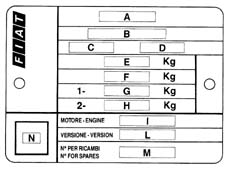

VEHICLE IDENTIFICATION DATA PLATE
- Path
- Technical Data > GENERAL INFORMATION > IDENTIFICATION PLATES > VEHICLE IDENTIFICATION DATA PLATE
- Kind
- technical data / specifications
- Applies to
- all engines; all production periods
- Interactive page
- https://sloeber94.github.io/elrnDB-fDbl/en/#/223000037
Applies to: all engines; all production periods
It is fitted to the front crossmember of the engine compartment
A. Manufacturer's name.
B. Homologation number
C. Vehicle type identification code.
D. Chassis manufacturing serial number.
E. Maximum authorised fully laden vehicle weight.
E. Maximum authorised fully laden vehicle weight plus trailer.
G. Maximum authorised weight on the first axle (front).
H. Maximum authorised weight on the second axle (rear).
I. Engine type.
L. Body version code.
M. Part number
N. Corrected smoke absorption factor (only for Diesel engines).

Applies to: engines: 1.2 8v; all production periods
It is fitted to the front crossmember of the engine compartment
A. Manufacturer's name.
B. Homologation number
C. Vehicle type identification code.
D. Chassis manufacturing serial number.
E. Maximum authorised fully laden vehicle weight.
E. Maximum authorised fully laden vehicle weight plus trailer.
G. Maximum authorised weight on the first axle (front).
H. Maximum authorised weight on the second axle (rear).
I. Engine type.
L. Body version code.
M. Part number
N. Corrected smoke absorption factor (only for Diesel engines).